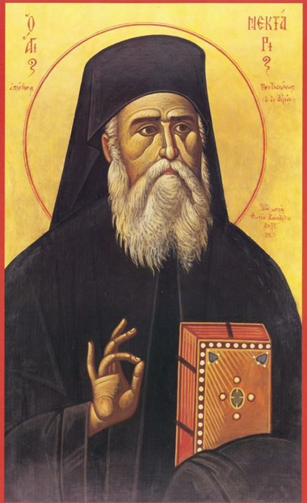

„Hoće li tko za mnom, neka se odreče samoga sebe, neka uzme svoj križ i neka ide za mnom.” (Mt 16,24)

Sveti Nektarije Eginski bio je pravoslavni biskup čiji je život obilježen dubokom nepravdom i progonom od strane crkvene hijerarhije. Bez ikakvog valjanog razloga uklonjen je s položaja i spriječen u preuzimanju uloge patrijarha u Aleksandriji, a biskupija je ignorirala sve njegove pokušaje komunikacije. Unatoč javnom poniženju i lažnim optužbama koje su ga pratile čak i kada je pomagao ženama u osnivanju samostana na otoku Egini, Nektarije nikada nije odustao od služenja Bogu, zadržavši unutarnji mir i dostojanstvo.
Njegova svetost crpila je snagu iz intenzivnog molitvenog života i potpune predanosti Božjoj volji. Bio je poznat po tome što je u molitvi tražio savjet za svaku odluku, ali i po nevjerojatnoj sposobnosti praštanja. Čak i za one koji su ga mrzili i proganjali, molio je Boga da im se smiluje kako ne bi propali, pronalazeći ljubav u srcu za svoje neprijatelje. Njegova pobožnost bila je duboko vezana uz Mariju i tradicionalne oblike istočne molitve, poput Isusove molitve: "Gospodine Isuse Kriste, Sine Božji, smiluj se meni grešnom."
Danas se lik svetog Nektarija, prikazan u filmu Božji čovjek, promatra kao most između istočne i zapadne kršćanske tradicije, približavajući katolicima bogatstvo pravoslavne duhovnosti, ikona i liturgije. Povijesna pravda djelomično je zadovoljena 1998. godine, kada je Grčka pravoslavna crkva u Aleksandriji uputila javnu ispriku za zlostavljanje kojemu je bio izložen, vraćajući dostojanstvo njegovu imenu. Nektarije ostaje snažan zagovornik i primjer vjere koja kroz strpljivost i praštanje pobjeđuje svako zemaljsko iskušenje.